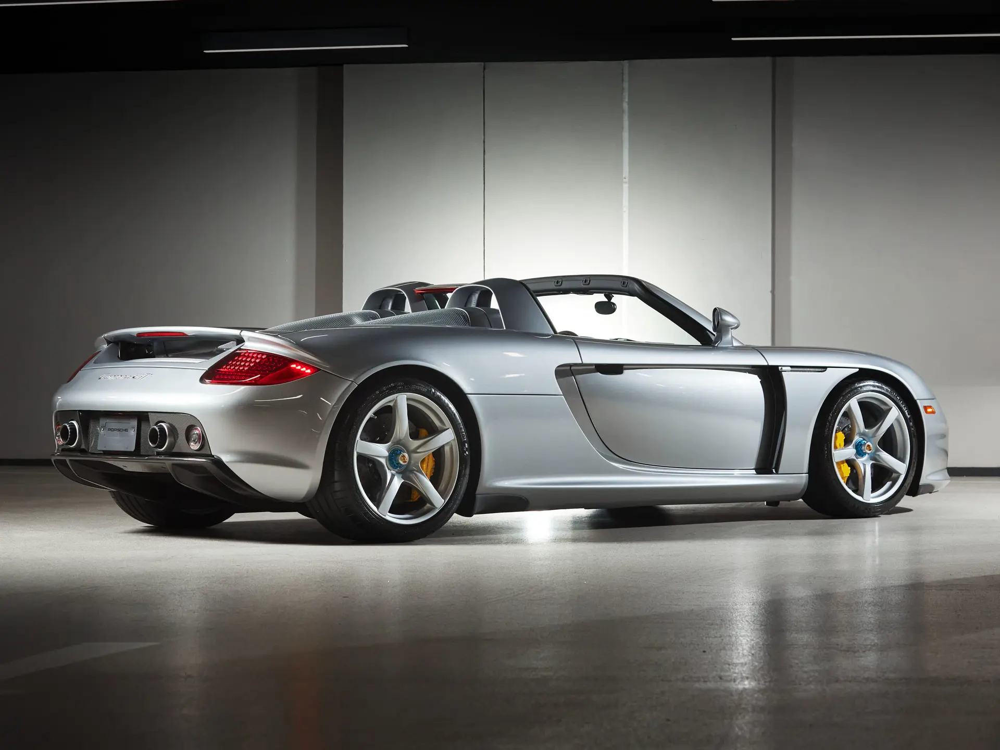
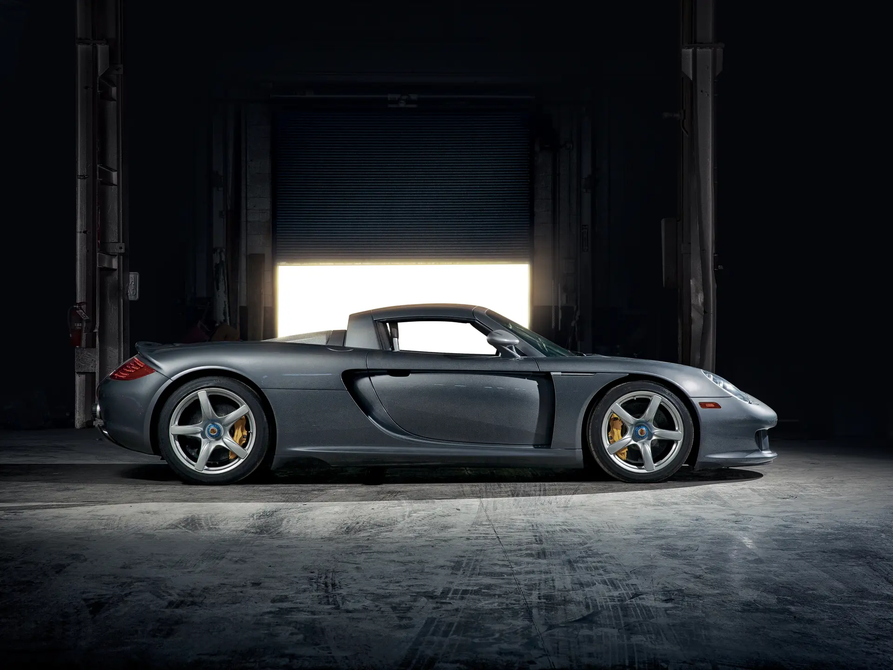

The Porsche Carrera GT represents one of the most uncompromising supercars ever produced, and it delivers one of the last truly analogue driving experiences. Derived from a cancelled Le Mans prototype program, the Carrera GT features a naturally aspirated 5.7-litre V10 engine paired with a lightweight carbon fibre chassis.
In an era where many manufacturers began transitioning to automated manuals, Porsche chose to equip the Carrera GT with a traditional manual transmission, a decision that has made its driving experience feel timeless and deeply engaging. Weighing just 1,380 kg, despite carrying one of the largest displacement engines Porsche has ever installed in a road car, it remains remarkably light and responsive.

Its design is equally distinctive, featuring elements such as the straight-cut roofline, the circular mesh engine cover, and the vertically extending active rear spoiler. The Carrera GT is not only timeless to drive, but also timeless in its design, a car that continues to stand apart both dynamically and visually.
| Engine | 5.7L Naturally Aspirated V10 |
| Power | 604bhp |
| Weight | 1380kg |
| Transmission | 6-speed Manual |
| 0-62 | 3.9 s |
| Top Speed | 206mph |
| Year | 2003 |